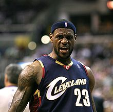

Par LeBron James
LeBron James ir viens no visu laiku izcilākajiem basketbolistiem. Viņš ir četrkārtējs NBA čempions, divkārtējs olimpisko spēļu zelta medaļnieks un kļuvis par NBA visu laiku rezultatīvāko spēlētāju. Pazīstams arī kā "The King", viņš ir slavens ar savu atlētismu, līderību un daudzpusību laukumā. LeBron ne tikai dominē basketbolā, bet arī aktīvi iesaistās labdarībā un biznesā, ietekmējot paaudzes gan sportā, gan ārpus tā.
